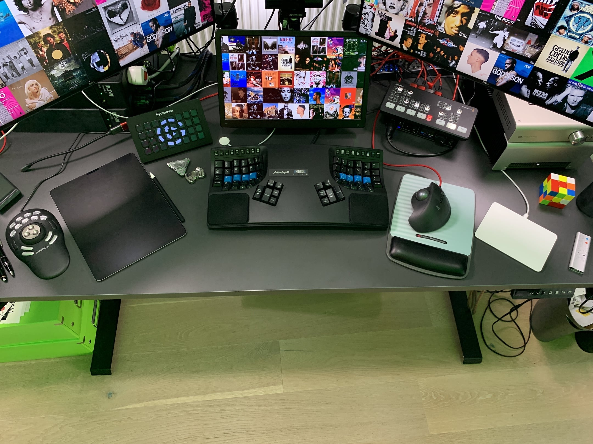

I am a fan of using the right tool for the job. Case in point, I use 7 different types of input control devices on my desktop! 😁 And feel handicapped without them now.
Highly recommend each, battle-tested.
From left to right:
Contour ShuttlePRO v2
for video editing of sales demo/promo videos (eg with Screenflow)... and gaining great playback controls when watching meeting recordings, ie skip, pause, fast forward, etc.. (much more efficient than attending live :)
iPad with GoodNotes (app) + Paperlike (screen protection with a paper feel)
for notes-taking, sketching ideas, etc.. App + screen protection make it a great experience, without them it does not work for me.
Elgato Streamdeck
if I had to choose only one in this list, it would be this. I have 300+ automations behind this, and keep adding more ## brings your sales demos and daily work to another level. Designed by/for gamers and streamers originally. Amazing for business purposes too :) "Programmable keypad" doesn't do it any favours. Automate almost anything with it.
Keyboard Kinesis Advantage2
newest addition, 6 months old. Steep learning curve, but amazing ergonomics and efficiency, especially with the 2 thumb keys clusters. Normal keyboards feel weirdly conceived and slow now :)
BlackMagicDesign ATEM Mini
to control your appearance and extend your possibilities during online meetings. See if your audio/video is live, hardware buttons to mute/unmute, show/hide, share your iPad screen as webcam, and much more. Designed for live streaming originally.
Logitech trackball with programmable keys
trackball makes navigating a large screen estate (eg my 4x screens) a breeze + sifting through emails and browser tabs only with the mouse thanks to the programmable keys (mark read, delete, etc..)
Apple Magic Trackpad
for navigating large images or documents, especially in apps like Adobe Illustrator, Photoshop, etc..